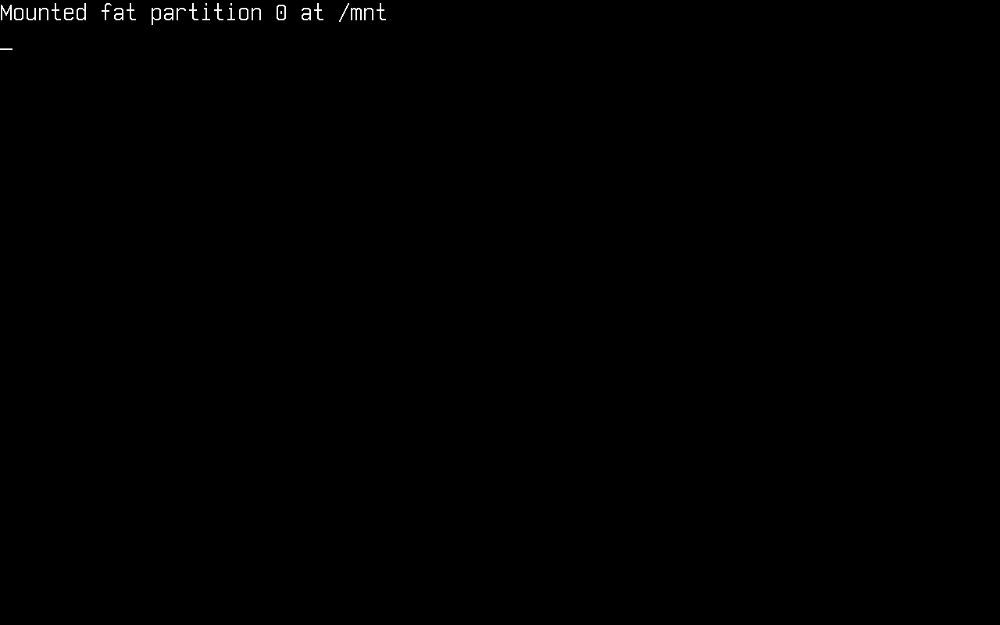
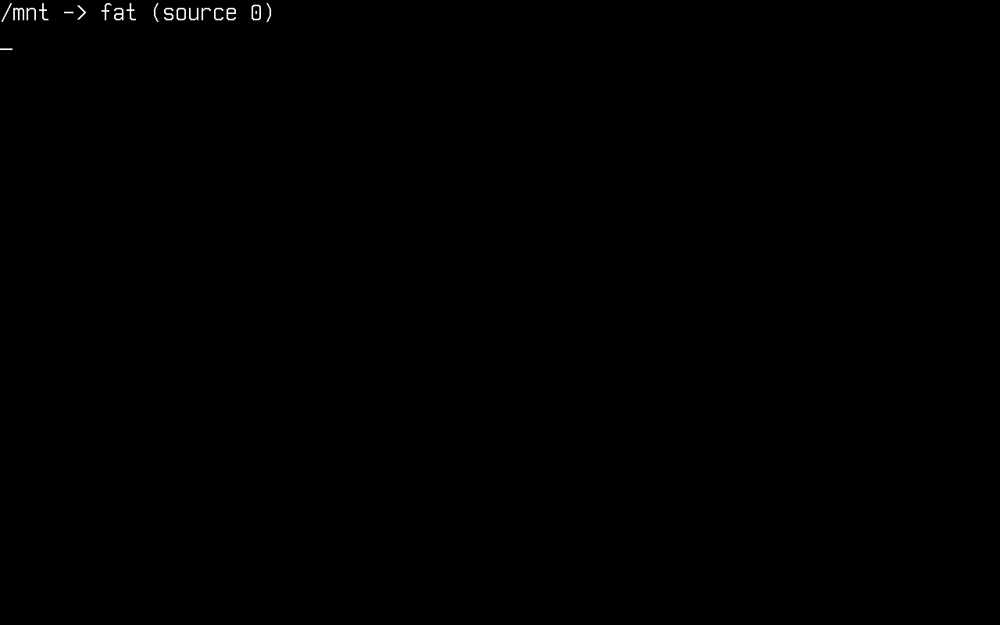
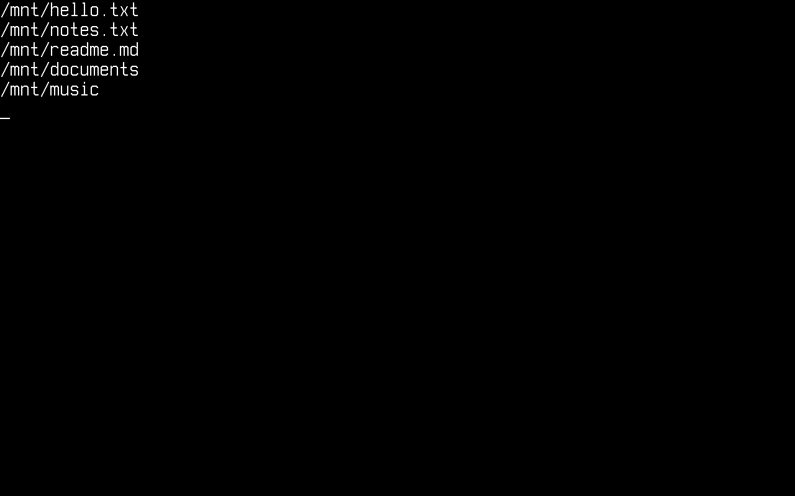
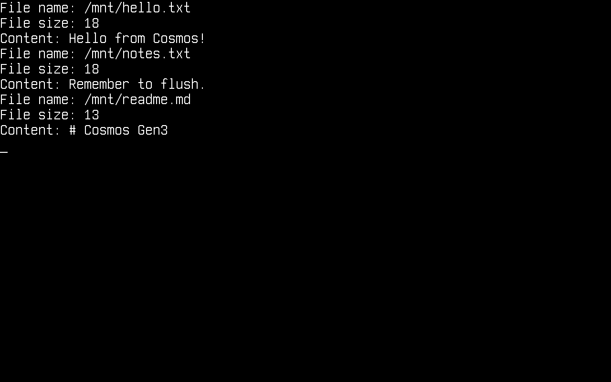
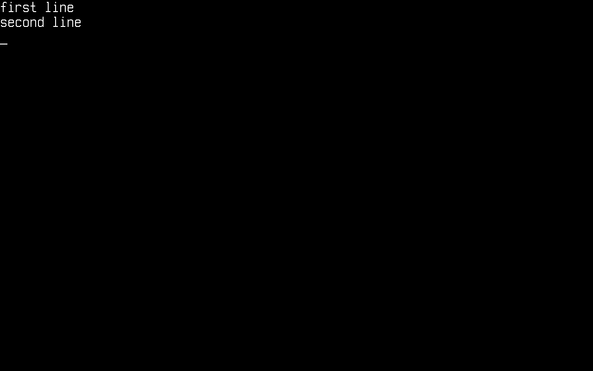

File System
In this article, we will discuss using the Cosmos Gen3 VFS (virtual file system).
Unlike Gen2, where you talked to CosmosVFS and a plugged subset of System.IO, Gen3 gives you the standard .NET System.IO API (File, Directory, FileStream, StreamReader/StreamWriter, FileInfo/DirectoryInfo) running unmodified on top of the kernel's VFS. You mount a filesystem at a Unix-style mount point and use ordinary rooted paths.
The main differences if you come from Gen2:
| Gen2 | Gen3 | |
|---|---|---|
| Paths | DOS drive letters (0:\file.txt) |
Unix paths (/mnt/file.txt) |
| Setup | CosmosVFS + VFSManager.RegisterVFS |
VfsManager.RegisterFilesystem + VfsManager.TryMount |
| API surface | Plugged subset of System.IO |
Full System.IO (streams, enumeration patterns, FileInfo, …) |
File.Move |
Not plugged (copy + delete) | Works, including onto-existing overwrite semantics |
| Filesystems | FAT32 (FAT12/16 partial) | FAT12/16/32 |
Attention: Always format your drive with Cosmos and only Cosmos if you plan to use it with Cosmos. Tools like Parted or FDisk are much more advanced and may lay the disk out differently than Cosmos expects.
WARNING!: Please do not try this on actual hardware! It may cause IRREPARABLE DAMAGE to your data. Use a virtual machine (QEMU via cosmos run, VMware, VirtualBox, …).
Enable storage in your kernel
Storage support is behind a feature switch. Make sure your kernel's .csproj does not turn it off (it defaults to true):
<PropertyGroup>
<CosmosEnableStorage>true</CosmosEnableStorage>
</PropertyGroup>
At boot the kernel initializes StorageManager, which registers every AHCI and NVMe device it finds and scans their MBR/GPT partition tables into StorageManager.Partitions.
To give your kernel a disk in QEMU, attach an image with cosmos run:
$ qemu-img create disk.img 64M
$ cosmos run --disk disk.img # attached as an AHCI disk (default)
$ cosmos run --disk disk.img,nvme # or as an NVMe namespace
--disk is repeatable if you want several drives.
Register a filesystem driver and mount it
These are the usings the snippets below rely on:
using System.IO;
using Cosmos.Kernel.System.Storage;
using Cosmos.Kernel.System.Vfs;
using Cosmos.Kernel.System.Filesystems.Fat;
using Cosmos.Kernel.HAL.Vfs;
First, register a FAT driver under a name of your choice, then mount a partition at a mount point. For the FAT driver, the source argument is the index into StorageManager.Partitions as a string ("0" = first discovered partition across all disks). Add this to your kernel's BeforeRun():
FatFilesystemType fat = new();
VfsManager.RegisterFilesystem("fat", fat);
if (VfsManager.TryMount("fat", "0", MountFlags.None, "/mnt", out VfsManager.VfsMount? mount))
{
Console.WriteLine("Mounted " + mount.Name + " partition " + mount.Source + " at " + mount.MountPoint);
}

From this point on, everything under /mnt is served by the FAT driver, and everything in this article is plain System.IO.
Note: / itself is a virtual root. It always exists, even with nothing mounted, and enumerating it lists the mount points. You cannot create files directly in it (IOException, read-only file system); create them under a mount point like /mnt.
Alternative: a RAM disk
For quick experiments you don't need a disk image at all. A block device is just an IBlockDevice (from Cosmos.Kernel.HAL.Interfaces.Devices), and a RAM-backed one fits in a few lines; this is exactly what the kernel test suites use:
internal sealed class MemoryBlockDevice : IBlockDevice
{
private readonly byte[] _storage;
public MemoryBlockDevice(string name, ulong blockSize, ulong blockCount)
{
Name = name;
BlockSize = blockSize;
BlockCount = blockCount;
_storage = new byte[blockSize * blockCount];
}
public string Name { get; }
public ulong BlockSize { get; }
public ulong BlockCount { get; }
public void ReadBlock(ulong blockNo, ulong blockCount, Span<byte> data)
=> _storage.AsSpan((int)(blockNo * BlockSize), (int)(blockCount * BlockSize)).CopyTo(data);
public void WriteBlock(ulong blockNo, ulong blockCount, ReadOnlySpan<byte> data)
=> data.Slice(0, (int)(blockCount * BlockSize)).CopyTo(_storage.AsSpan((int)(blockNo * BlockSize)));
public void Flush() { }
}
The FAT driver accepts an injected device directly (leave source empty when formatting and mounting):
MemoryBlockDevice ramDisk = new("RAMDISK", 512, 65536); // 32 MiB
FatFilesystemType fat = new(ramDisk);
fat.TryFormat(default, new FatFormatOptions { Type = FatType.Fat16 });
VfsManager.RegisterFilesystem("ramfat", fat);
VfsManager.TryMount("ramfat", "", MountFlags.None, "/mnt", out _);
Format a disk
To format (mkfs) a partition through the VFS, use VfsManager.TryFormat with the driver name, the partition index and the driver's option type. The FAT formatter picks sane geometry from the options you give it:
FatFormatOptions options = new()
{
Type = FatType.Fat32,
VolumeLabel = "COSMOS ",
};
if (!VfsManager.TryFormat("fat", "0", options))
{
Console.WriteLine("Format failed");
}
Formatting is refused while the source is mounted: unmount first with VfsManager.TryUnmount("/mnt").
List mounted volumes
VfsManager.Mounts is the mount table. Each entry tells you the driver name, the backing source and the mount point:
foreach (VfsManager.VfsMount m in VfsManager.Mounts)
{
Console.WriteLine(m.MountPoint + " -> " + m.Name + " (source " + m.Source + ")");
}

Get a list of files
We start by getting a list of files, using:
string[] files = Directory.GetFiles("/mnt");
foreach (string file in files)
{
Console.WriteLine(file);
}
Search patterns work too; this is the stock BCL enumeration engine:
string[] logs = Directory.GetFiles("/mnt", "*.txt");
Get a directory listing (files and other directories)
string[] files = Directory.GetFiles("/mnt");
string[] directories = Directory.GetDirectories("/mnt");
foreach (string file in files)
{
Console.WriteLine(file);
}
foreach (string directory in directories)
{
Console.WriteLine(directory);
}

Read all the files in a directory
We get the file list and print the content of each file. As in Gen2, keep filesystem code inside try/catch: the exceptions are the standard System.IO ones and they are catchable:
try
{
foreach (string file in Directory.GetFiles("/mnt"))
{
string content = File.ReadAllText(file);
Console.WriteLine("File name: " + file);
Console.WriteLine("File size: " + content.Length);
Console.WriteLine("Content: " + content);
}
}
catch (Exception e)
{
Console.WriteLine(e.ToString());
}

Create a new file
try
{
using FileStream stream = File.Create("/mnt/testing.txt");
}
catch (Exception e)
{
Console.WriteLine(e.ToString());
}
Create a new directory
Directory.CreateDirectory creates the whole chain of missing parents in one call:
try
{
Directory.CreateDirectory("/mnt/documents/reports");
}
catch (Exception e)
{
Console.WriteLine(e.ToString());
}
Write to a file
try
{
File.WriteAllText("/mnt/testing.txt", "Learning how to use the Gen3 VFS!");
}
catch (Exception e)
{
Console.WriteLine(e.ToString());
}
File.AppendAllText, File.WriteAllBytes and File.WriteAllLines work the same way.
Read a specific file
try
{
Console.WriteLine(File.ReadAllText("/mnt/testing.txt"));
}
catch (Exception e)
{
Console.WriteLine(e.ToString());
}
And for binary data:
byte[] data = File.ReadAllBytes("/mnt/testing.txt");
Console.WriteLine("Read " + data.Length + " bytes");
Copy, move, delete
Unlike Gen2, File.Move is fully supported, no copy-and-delete workaround needed. A move onto an existing destination throws IOException unless you pass overwrite: true; the overwrite is crash-safe (the destination is kept as a backup until the rename lands).
try
{
File.Copy("/mnt/testing.txt", "/mnt/copy.txt");
File.Move("/mnt/copy.txt", "/mnt/renamed.txt");
File.Delete("/mnt/renamed.txt");
Directory.Delete("/mnt/documents", recursive: true);
}
catch (Exception e)
{
Console.WriteLine(e.ToString());
}
Deleting a file that is still open does not fail: the delete goes pending and the entry disappears when the last handle closes, which is what the BCL's DeleteOnClose semantics expect.
Streams
The full stream stack is available, including seeking, truncation (SetLength) and buffered text I/O:
using (FileStream stream = new("/mnt/log.bin", FileMode.Create, FileAccess.ReadWrite))
{
stream.Write(new byte[] { 1, 2, 3, 4 });
stream.Seek(0, SeekOrigin.Begin);
int first = stream.ReadByte(); // 1
}
using (StreamWriter writer = new("/mnt/notes.txt"))
{
writer.WriteLine("first line");
writer.WriteLine("second line");
}
using (StreamReader reader = new("/mnt/notes.txt"))
{
string? line;
while ((line = reader.ReadLine()) != null)
{
Console.WriteLine(line);
}
}

Current directory and relative paths
The kernel keeps a current directory (it starts at /), so relative paths and Path.GetFullPath behave like on any Unix system:
Directory.CreateDirectory("/mnt/work");
Directory.SetCurrentDirectory("/mnt/work");
File.WriteAllText("relative.txt", "resolved against the CWD");
Console.WriteLine(File.Exists("/mnt/work/relative.txt")); // True
Console.WriteLine(Path.GetFullPath("sub/../file.txt")); // /mnt/work/file.txt
Directory.SetCurrentDirectory("/");
Error handling
The standard System.IO exception contract applies, so you can catch precisely:
- Opening a missing file whose parent exists →
FileNotFoundException - Any path under a missing directory (or an unmounted prefix) →
DirectoryNotFoundException - Creating a file directly in the virtual root
/→IOException(read-only file system) - Deleting a non-empty directory without
recursive: true→IOException File.Copy/File.Moveonto an existing file without overwrite →IOException
With nothing mounted at all, System.IO still degrades gracefully: Directory.Exists("/") is true, enumerating / returns an empty list, and every access to another path fails with one of the exceptions above, never a kernel fault.
Current limitations
- Symbolic links and hard links are not supported (
ENOTSUP/EPERMunder the hood; the BCL surfacesIOException). - File timestamps are not persisted yet (
File.SetLastWriteTimeis accepted but a FAT timestamp lands later). DriveInfo(free-space queries) is not wired up yet.- FAT is the only filesystem driver today; the
IVfsFilesystemTypeinterface is what a new driver implements.
How it works
Your code calls the stock BCL, which bottoms out in the Unix PAL (Interop.Sys.* P/Invokes). Those ~45 entry points are plugged in Cosmos.Kernel.Plugs: a file-descriptor table adapts the PAL contract (fds, dir streams, PAL errnos) and delegates to VfsManager, which owns path resolution, the mount table, the current directory and open-handle semantics, and dispatches to the mounted filesystem driver, which reads and writes an IBlockDevice (AHCI or NVMe via StorageManager, RAM via MemoryBlockDevice).
File / Directory / FileStream (stock BCL)
│
Interop.Sys.* PAL calls (stock BCL, plugged)
│
FileDescriptorTable (Cosmos.Kernel.Plugs: fds, dir streams, errno)
│
VfsManager (mounts, paths, CWD, open handles)
│
IVfsFilesystemType / IVfsSuperblock (FAT driver)
│
IBlockDevice (AHCI, NVMe, MemoryBlockDevice)